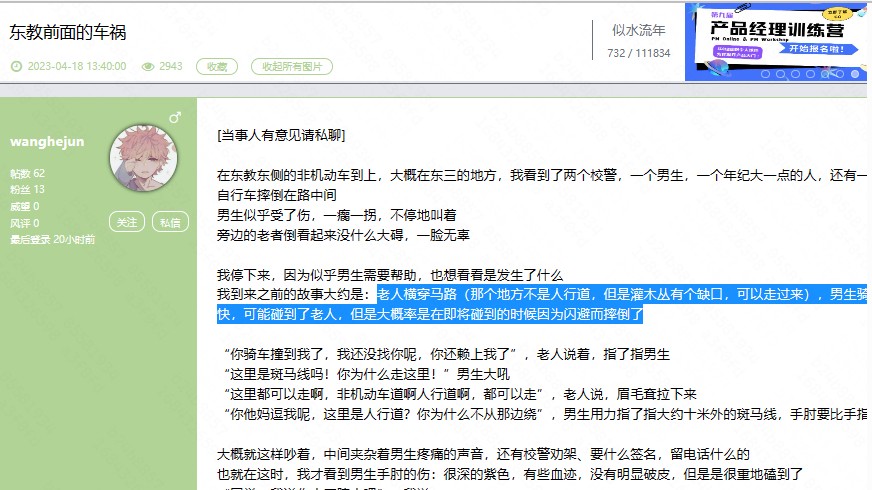

CC98——交通事故典型案例总结
1.东三事件

时间：2023.4.18 星期二上午
地点：东三
事情经过：老人横穿马路（那个地方不是人行道，但是灌木丛有个缺口，可以走过来），男生骑车很快，可能碰到了老人，但是大概率是在即将碰到的时候因为闪避而摔倒了
原因：东三处斑马线设置不合理，路口出现不合理缺口（灌木丛）
类似情况：风味食堂对面也有灌木丛开口，存在车祸隐患（2022.07.02发生类似情况 关键词：下雨天单手骑车；横穿马路）
建议：1.处理此类车道旁灌木丛缺口；2.加强对任何人员进行横穿马路的管制
关键词：横穿马路
2.银泉到东区路口事件

时间：2022.11.11周五上午十点四十
地点：银泉至东区路口大食堂丁字路口
事情经过：一辆小龟正驶进路口，而路口西侧一辆小叉车（如图）在左转，两个车都没有减速，随后叉车叉子进入小龟底盘（有顶翻风险）
原因：双方在路口转弯时均未减速
建议：1.学校需要管制叉车、搅拌车等车辆（有同学反映这些大型车经常不减速行驶）2.该路口十分窄小，为高风险地带，交警应着重管理路口减速问题 3.此路口机动车量较别的路口更大
关键词：大型车辆、机动车；路口转弯处；减速；横穿马路
3.东三门车祸

时间：2022.11.09 星期三早上
地点：东三门外（校外）
事情经过：校内小龟从东三门冲出，东三门甬道正好处于机动车车主视野盲区，并且两车车速均较快，造成小龟被撞飞（无生命危险）
原因：1.无红绿灯 2.丁字路口转弯处两车未减速
建议：1.此路口在早高峰时段学校会安放临时红绿灯，希望能够延长红绿灯安放时间 2.《中华人民共和国道路安全法实施条例》第七十条，非机动车在没有非机动车道时横穿马路应该尽量下车推行
关键词：转弯处；减速；红绿灯；横穿马路
4.西区发生车祸，女生电瓶车被碾碎
时间：2022.9.19星期一
地点：西区某大路口
事情经过：机动车慢速行驶，但见人经过直接撞了上去并碾压（无生命危险）非机动车正常行驶
原因：司机蛮横驾驶
同学锐评：1.学校里的车很多时候都跟爹一样 看到你过马路让都不让

市区的车都要好很多
2.校内非机动车地位最低，要让着行人也要让着机动车，似乎到学校里开车的确实都比外面狂野。 有一次在临湖西边的路骑自行车路过，路本来就窄旁边也停了食堂的车（也是没办法，毕竟他们也没有别的地方停），一辆SUV开过来根本没有避让的意思，还往我这边靠，但它另一边离路边明明还有距离，但是我那一边边上就是食堂的那种黄色的车车，已经没办法再靠边了，结果这货到我面前还加速了，加速了。。。

我：？？？车后视镜都已经顶到我了，然后整个重心就歪到向路边了差点摔，摔了估计就没办法在这发帖了。 还有一次就是台风天骑车本来就不容易了，有车就在非机动车道慢悠悠地开，占着道也就算了，倒是给人家超车的机会啊，这不是最基本的吗，这货在那开S形。那时候机动车道是空的，好好的机动车道不开占非机动车道是什么意思。
3.冷知识：学校没有哪个部门有执法权，更别说罚款了，校园是交通管理的难点和盲点。 建议：可行的办法是建立黑名单制度，常态化监管，凡是机动车记录有在校园道路上的“不合法行为”，非本校师生未办理校园通行证或停车证的，记录到一次“违法”行为，即拉入黑名单，不再允许进入浙大校园；如果是本校师生车辆，第一次警告+通告所属分院，第二次收回通行证停车证并一年内不得进入。这样施行下去绝对跟外面一样，就看领导们愿不愿意麻烦
4.真的 好多车开的很快，转弯不打转向灯也不让行人 缺德得很
5.好可怕，晚饭出基图的时候，旁边车流也非常快，从我后边硬挤上来。
6.头盔一定要戴好，希望妹子没事。另外这些校内乱开车的大爷该管管了
之前从药学院旁边小路要开到大路上那段路上，一辆汽车从大路上拐进来丝毫不减速，还好我往旁边躲的快

还有一次去实验室路上，一辆货车从操场拐到大路速度超快，得亏离我有段距离，大路上也没有学生或🛵开过，真的好危险啊，为什么这些车在学校里面要拐弯都不减速的啊

7.bdbd 今天吃完饭回实验室的路上，穿马路的时候，一辆私家车就直冲冲地开过来，很迟才减速，停下的时候离我人就个6，70公分的距离，非常近的距离，没有礼让行人的意思。快步走开的时候那司机还按喇叭，太嚣张了
建议：1.校园不打转向灯的、超速的能不能专门开通一个举报窗口 2.学校应该把测速装置拿到的数据利用起来，建立罚款和黑名单制度 3.记得年初哈工大推出了校园内机动车限速和超速处罚的规定，我看我们校园内也有测速摄像头什么的，但是不知道应该怎么样推进出台相关规定https://mp.weixin.qq.com/s/xcozsuik2DBf8pfAwlWIUA
希望学校管一下机动车的以下行为： 1. 晚上开远光灯。 2. 车不让人（医学院丁字路口，南大门十字路口） 3. 机动车停在非机动车道上。（迪臣路一路都是，以及晚上蓝田门口的路上。） 4. 超速
开车和骑电瓶车的都得注意。 开车的逆行啥的我都见过好多。乱停就不说 那种电瓶车骑得马路是自己家的也很夸张，完全不看机动车转向灯啥的，还喜欢从车头过，不喜欢等等。 他车大，你车小，出事受伤驾驶员报保险又没啥事。他万一没注意，电动车要受大残的。尤其校内基本不带头盔，一旦出事，后脑勺着地，麻烦的很。 遵守交规，文明出行。就走路的最惨哈哈，一阵阵风吹过。上次在食堂门口那个路，我半天没过去，一个让的都没。我一抬腿一辆车，一抬腿一辆车，都不减速让点位置。后来等不了，走其他路了
5.东二门车祸

时间：2022.2.28 星期一 傍晚
地点：东二门
事情经过：东二门大草坪路口，一白色轿车撞倒一骑共享单车同学
原因：东二门机动车通道一些车行驶速度过快
建议：东二门入口处机动车须慢行
关键词：车速过快
6.转向车祸

时间：2021.12.23 星期四 早上八点半
地点：紫金港某实验室路口
事情经过：
原因：lz骑车往实验室走，在路口打算左转，于是减速朝后看，后面一辆电动车朝其飞奔而来。下一秒lz就被撞翻在地无法起来，车子和人被那电动车拖着刮行了一小段
建议：一方面要查到肇事者以维权，另一方面骑自行车的同学自己还是要万分小心，虽然道理在自行车这边，但和电瓶车相撞吃亏的总是自行车。
建议： 1.正常情况下紧紧靠住右边，转弯时提前几十米维持车速和直行的情况下查看路口情况 2.骑自行车一定不要戴耳机 3.一定双手骑车 公路山地车相对更加稳定，很多兄弟经常双放手，但普通通勤车其实是很不稳定的。
关键词：拐弯让直行；维权
7.农生环车祸

时间：2021.12.17 星期五 下午
地点：东二门
事情经过：lz骑小龟从东三门往西区方向直行，在农生环路口，其左前方一女生骑电动车拐弯与其交汇，是对向车道突然左拐，lz来不及反应，对方也显然没有观察来车就拐弯。急刹车后还是甩尾撞上了对方后轮，撞上的时候速度不快但对方失去平衡连人带车到倒地
原因：女生左转弯未让直行
建议：路上有人加塞、不规范变道、逆行，“拐弯让直行”、“让速不让道”这都是基本的交通法规，希望能科普基本交通常识；希望有维护自己权益的意识
关键词：拐弯让直行；交通常识；维权
8.阳明桥雨夜车祸

时间：2021.12.25 星期五 晚上
地点：阳明桥十字路口
事情经过：lz下雨骑车回宿舍，在月牙楼体育馆的那个十字路口被一辆滴滴车撞倒在地
原因：雨夜滴滴车速过快
类似情况：丹青路口出租车司机常超速行驶
建议：夜晚滴滴等出租车司机需保持车速（尤其是视野受限的情况下
关键词：车速过快；雨夜
9.文科组团食堂逆行

时间：2021.9.23 星期四
地点：文科组团食堂
事情经过：文科组团食堂饭点逆行，并且未下车推车，三辆小龟并驾齐驱有说有笑
建议：需避免逆行和并驾齐驱
关键词：车逆行；并驾齐驱
10.蒙民伟楼路口车祸

时间：2021.9.16 星期四
地点：蒙民伟楼机动车非机动车交汇处换道口
事情经过：下课时段，换道口处黑色轿车车速未减，lz骑车下雨天地滑欲避开而左转摔倒
建议：上下课等时段以及东二门路段机动车须减速；换道口处非机动车骑行需小心
关键词：车速过快；换道口
11.丹青路口摩托超速骂人

时间：2021.5.28 星期五 下午五点半
地点：丹青学园路口休闲食堂方向
事情经过：lz从丹青正门骑小龟右拐出来，驶向休闲食堂，在拐弯前lz有提前向马路中线并去，正准备拐弯时回头观望有无车辆，被高速摩托车擦过
建议：校园非机动车不能超过30码、机动车不能超过50码，校园应禁摩
关键词：超速；维权
12.医学院路口车祸

时间：2021.4.1 星期四 早上7:55左右
地点：医学院三岔路口
事情经过：雨天，lz从宿舍区往左拐弯，一女士从大西区往教学楼方向拐弯，连续三辆直行的汽车遮挡住两人的视线，直到距离两三米，双方才注意到各自的存在，来不及刹车故碰撞。
建议：过弯需慢速行驶
关键词：雨天；转弯未减速
13.蒙民伟楼车祸
时间：2020.10.19 星期一 下午1:50
地点：蒙民伟楼路口
事情经过：lz在斑马线前面减速到几乎停下（如红色箭头），然后瞄了一眼后面，其视线范围里还没有车子接近，就在其刚转了弯（如蓝色箭头）时，被一位姑娘开着小龟直接撞上。
原因：转弯追尾，后车未减速；拐弯需让直行；拐弯时使用拐弯手势
建议：路口需减速，防止追尾
关键词：路口；车速过快
14.蒙民伟楼车祸

时间：2020.9.20 星期日 下午1:40
地点：蒙民伟楼路口
事情经过：lz骑车去蒙民伟楼，在路口要拐弯时候被一辆从后面开来的电瓶车撞到地上
原因：转弯追尾，后车未减速
建议：路口需减速，防止追尾；拐弯需让直行；拐弯时使用拐弯手势
关键词：路口；车速过快
15.休闲-东操十字路口车祸

时间：2019.11.14 星期四 早上
地点：蒙民伟楼路口
事情经过：一女士骑车从大食堂将驶向田径场，一辆自行车突然横向转弯，导致该女士未来得及刹车便飞摔出去
原因：前车突然转弯变向
建议：前车拐弯使用拐弯手势，后车与前车保持距离，保持速度
关键词：拐弯变向；路口；车速过快
朵朵——交通事故典型案例总结
1.315 农生环车祸


时间：2023.3.15 星期一
地点：农生环路口
原因：1.肇事者转弯时候没有减速导致撞上了正在骑行的同学
2.汽车占用非机动车道停车，导致汽车视线受阻
关键词：道路狭窄 汽车占用非机动车道停车 车多路窄
改进措施：
- 隔离柱，断绝机动车长期停放阻碍视线的可能
- 建立针对性条例
- 修建新的停车场 缓解停车位紧张的问题 转弯时减速
2.阳明桥以下的十字路口

事故原因：单手骑车 十字路口小车没有礼让行人
3.生科院下雨骑行

事故原因：单手骑车 雨天无法看清楚路
解决措施：
-
宁愿迟到 也不要单手骑车打卡
-
提前出发
-
下雨天增派小白
4.休闲-丹青车祸

时间：2021.4.7 星期三 下午 17:20
地点：休闲食堂到丹青路口
事情经过：一女生慢速骑车从休闲食堂往丹青行驶，一辆自行车快速过弯骑行撞至该女士
原因：拐弯速度过快
建议：路口过弯需减速
关键词：拐弯路口；车速过快
5.菜鸟驿站车祸

时间：2021.11.17 星期三 上午
地点：菜鸟驿站
事情经过：男生骑小龟上课，对向两车直行，后车欲从左侧超前车，导致和男生对撞
原因：对方车辆越线
建议：上课时骑车需小心，特别是对向骑车；超车需慢速，需注意对方车辆
关键词：车速过快；超车；对撞；急着上课
6.麦香餐厅车祸

时间：2023.3.13 星期六
地点：麦香餐厅（东三门）
事情经过：机动车撞上站在路口指挥的保安
原因：机动车速度过快，超校园限速
关键词：车速过快；超车；对撞；急着上课
7.银泉-北教车祸

时间：2023.5.11 星期四 晚上21:20
地点：银泉-北1路口
事情经过：车主下课骑车被一辆开得很快的电瓶车撞倒
原因：电瓶车车速过快
建议：晚课下课赶路勿过急
关键词：车速过快；下课急着赶路
8.丹青十字路口车祸

时间：2020.10.31 星期日 下午13:15
地点：丹青十字路口
事情经过：车主骑车驶向校医院，下雨天刹车未刹停，撞向另一共享单车车主
原因：车主未注意附近车辆，且刹车习惯不好（习惯前刹而非后刹
建议：刹车尽量先后刹
关键词：下雨天；车速过快；前刹后刹
9.东二麦斯威路口车祸

时间：2021.5.18 星期二 晚上21:20
地点：东二麦斯威
事情经过：下课车流量巨大，车主见前车停靠，便减速停下，被后车追尾
原因：后车未注意前车速度，刹车不及时导致追尾
建议：晚课后勿急，天黑更应好好看路
关键词：晚课；车速过快；追尾
10.医学院路口车祸

时间：2018.3.15 星期二
地点：医学院岔路口
事情经过：车主直行，一女生骑车转弯未打手势故相撞
原因：弯道拐弯未让直，拐弯未打手势
建议：如果是骑龟 1.龟的转向灯很弱，白天几乎看不见。 2.打了也没人看，或者说后面人看不见，龟的转向灯车灯很小，位置在前面。 3.龟的反光镜，骑龟的都了解，那是个鸡肋，根本看不见后面 4.还是打手势，自己拐弯慢行，往后看几眼，最主要。 还要注意车转弯侍候，不要横向停在路中央。人潮高峰的时候多留神吧。还有就是学校在路口安排保安人员不够多[微笑]，看到很多次撞车都没人来管。
1.希望各位骑车不要戴耳机，除非路上基本没什么人，也不要看手机。 2.希望想拐弯的尽早换到那一侧去，不要从最右边往左边拐。 3.刹车不太行的就不要骑太快了，真的很危险。 4.走路的尽量挑没车的地方走，不要横着并排，也不要蛇皮走位。
关键词：弯让直；拐弯未打手势
11.玉湖食堂车祸

时间：2023.6.7 星期三 早上9:40
地点：玉湖食堂路口
事情经过：车主赶着上课骑龟出行，由于小白遮挡且未减速慢行以及未能及时注意从路口另一边骑来的小龟，因而发生碰撞
建议：从支路插入主路记得注意来车，上课不要太赶
关键词：未注意来车
12.东一门车祸

时间：2023.6.8 星期三
地点：东一门-校医院-堕落街路口
事情经过：一龟逆行导致对冲
建议：此处外卖小哥极快且喜欢按喇叭，路口非常混乱，堆放很多车辆，此道最好不进行转向等，避免逆行，建议从右侧门绕道行使
关键词：逆行；车速过快
13.《雨天小龟/自行车出行指南》
时间：2023.5.22 星期一
地点：瑞幸路口
事情经过：雨天差点发生车祸
建议：早上差点在瑞幸路口出车祸，所以️
《雨天小龟/自行车出行指南》 ps.欢迎补充（❗️好多补充，大家在评论区看看吧）
️1.技术：如果骑行者无法实现很稳的［单手骑车］，请穿雨衣，为自己和他人负责。或者你可以没人的时候多练练啊，别拿实战当演习。
️2.车距：平时骑行需要保持车距，下雨天更需要保持车距！（️前方车辆突然刹车也不至于撞上的距离）雨天多数人打伞出行，而且雨伞需要压很低才能挡雨，肯定会影响视线，但请记得一定要保持车距。
️3.后视镜：请大家有后视镜的利用好后视镜，没有后视镜的在转弯时要更加注意后方车辆。（️提示：如果车距过近，你可能处在前方车辆后视镜的盲区）
️3.行驶：请［靠！右！行！驶！］️靠右行驶是一件很简单但是至关重要的事情。
️4.情况1：比如你要在某个可以左转的路口直行，应当靠右行驶，左道需要留给要左转的同学。就算你因为加速而靠左行驶，也应当在接近路口时减速，或提前进入右车道。（️如瑞幸楼下、安中旁边那条可以向左转向西教的路）
️5.情况2：比如你需要左转或右转，应当提前慢慢向左（右）道靠近，千万避免需要左转时，一直靠右行驶，最后在转向路口近90度转弯，那不是情等着挨创吗。
❗️补充5.情况2的高发路段：基图十字路口（向北行驶左转向阳明桥）、向南驶过东操（左转就到小剧场、直走就到安中）的原T字路口（来源AAA卖崽蛙（15一只））
️6.情况3：月牙楼环形道路是逆时针骑行，别逆行，就算你已经逆行了，请减速且靠右。️（兄弟，你都逆行了，就别骑得飞快了ok？）
省流版：技术、骑慢点、遵守交通规范、保持车距、别发呆
14.《校园逆行问题》

建议：绕道 从医学院到留食的那条路上，有很多同学会在靠近食堂的那条小路上逆行，高峰期甚至逆行的比顺行的多（有几次我甚至怀疑我自己在逆行）刚刚差点被一辆逆行飞驰的小龟创到… 其实完全可以不逆行，过两次马路的事，逆行真的有很大的安全隐患 还有在休闲旁边，话不多说，如下图所示，也是逆行的重灾区，也可以通过绕一下解决 希望同学们能自觉一点，安全的校园环境需要大家一起努力创造